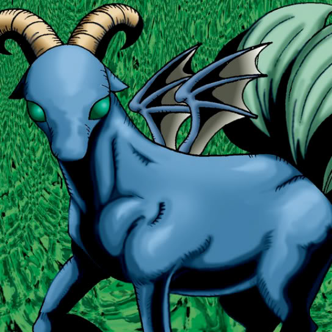

Dark Gray

STATS
ATK: 800
DEF: 900DECK COST
Deck Cost per Card: 17Fusion List (15 Possible Fusions)
- Dark Gray + Abyss Flower = Flower Wolf
- Dark Gray + Armed Ninja = Tiger Axe
- Dark Gray + Barrel Lily = Flower Wolf
- Dark Gray + Bat = Dice Armadillo
- Dark Gray + Dancing Elf = Nekogal #2
- Dark Gray + Dharma Cannon = Giga-tech Wolf
- Dark Gray + Doron = Tiger Axe
- Dark Gray + Hourglass of Life = Garvas
- Dark Gray + Key Mace = Nekogal #2
- Dark Gray + Kurama = Garvas
- Dark Gray + M-Warrior #1 = Tiger Axe
- Dark Gray + Mechanical Snail = Dice Armadillo
- Dark Gray + Tentacle Plant = Flower Wolf
- Dark Gray + Vishwar Randi = Nekogal #2
- Dark Gray + Witch's Apprentice = Nekogal #2